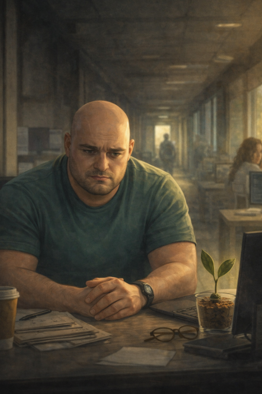

Mercoledì 18 marzo 2026
Ci sono giorni che cominciano già sbagliati.
Non sbagliati in modo evidente. Non pioggia, non notizie brutte, non caffè rovesciato sulla tastiera. Sbagliati in modo sottile. Come una nota fuori posto in una melodia che conosci a memoria — non la senti subito, ma qualcosa nel tuo interno registra l'anomalia prima che la mente la formuli.
Stamattina era uno di quei giorni.
L'ho capito dalle mie foglioline. Si erano svegliate rigide. Orientate non verso la luce, come di consueto, ma verso il corridoio. Come se sapessero già che il problema, oggi, non sarebbe arrivato dalla finestra.
Avevano ragione.
SimoneQ era arrivato in anticipo.
Questo era già insolito. SimoneQ è una persona precisa, puntuale, il tipo che arriva esattamente quando ha detto che sarebbe arrivato e considera l'anticipo una forma di pressione sociale non richiesta. Arrivare prima significa che qualcosa ti spinge. Qualcosa che non riesci a tenere fermo mentre sei ancora a casa.
L'ho osservato sistemarsi alla scrivania. Aprire il computer. Fissare lo schermo per trenta secondi senza fare nulla. Poi chiuderlo. Poi riaprirlo.
Irrequieto.
Giulia era arrivata poco dopo e lo aveva guardato con quell'occhio suo, quell'occhio che cataloga senza giudicare, e aveva fatto la cosa giusta: non aveva chiesto niente. Si era seduta, aveva acceso il suo computer, e aveva lasciato che il silenzio facesse il suo lavoro.
Il silenzio a volte è la forma di cura più precisa che esiste.
Io stavo ad ascoltare. Immobile. Professionale. Antenne orientate.
QuaSim era apparso alle nove e dodici.
Non dalla porta principale. Dal corridoio laterale, quello che passa vicino al magazzino, quello che di solito usano solo le persone che non vogliono essere viste arrivare. Si era materializzato nell'inquadratura della porta con quella sua calma architettata, la cicatrice che nel chiarore mattutino sembrava quasi normale, quasi un dettaglio qualunque, se non sapevi già cosa cercare.
Ha salutato con un cenno. Generico. Rivolto a tutti e a nessuno.
Poi si è avvicinato a SimoneQ.
— Hai un minuto?
SimoneQ ha alzato lo sguardo. Ha esitato un secondo — un secondo che ho notato io, che ho notato Giulia, che probabilmente non ha notato nessun altro.
— Certo — ha detto.
E lì, in quel certo detto con una voce appena un tono sotto il normale, ho sentito qualcosa stringersi nel nocciolo.
No, avrei voluto dire. Non hai un minuto. Non per lui. Non oggi.
Ma sono un seme in un bicchiere e il mio vocabolario gestuale si limita alle foglioline, e le foglioline non bastano per fermare quello che sta per succedere.
Si sono seduti nell'angolo della stanza, vicino alla finestra, dove la luce era bella e l'aria sembrava pulita e tutto aveva quella qualità ingannevole delle scene che sembrano innocue perché sono illuminate bene.
QuaSim ha parlato sottovoce. Non abbastanza sottovoce da non far capire che stava parlando sottovoce, che è una tecnica precisa: crei l'impressione di riservatezza, crei l'impressione di fiducia, crei l'impressione che quello che stai per dire sia prezioso perché non è per tutti.
Non riuscivo a sentire le parole. Ma sentivo il ritmo. E il ritmo era quello che conoscevo: domande travestite da affermazioni, verità parziali presentate come quadri completi, silenzi posizionati con la precisione di chi sa che il silenzio al momento giusto pesa più di qualsiasi frase.
SimoneQ ascoltava.
Annuiva.
Una volta ha scosso la testa, ma piano, il tipo di scuotimento che non è rifiuto ma elaborazione, il tipo che dice non ci avevo pensato in questi termini invece di non è vero.
E questa distinzione, piccola e invisibile ai più, era esattamente il punto di ingresso che QuaSim stava cercando.
Giulia mi ha guardato.
Io ho guardato lei.
Le mie foglioline erano dritte come antenne in allerta.
Lei ha fatto un piccolo movimento con la testa, appena percettibile, che significava lo vedo anch'io.
Ma nessuno dei due poteva fare nulla. Non ancora. Non senza sapere cosa stava dicendo QuaSim, non senza una ragione concreta, non senza sembrare paranoici in una mattina di sole in un ufficio tranquillo dove due persone stavano semplicemente parlando vicino alla finestra.
Questo è il genio crudele delle trappole ben costruite.
Non succedono nel buio. Succedono in piena luce, davanti a tutti, in modo che chi guarda si chieda se sta esagerando.
La conversazione è durata ventidue minuti.
Li ho contati.
E se ne è andato dal corridoio laterale, come era arrivato.
SimoneQ è rimasto seduto vicino alla finestra ancora qualche minuto. Guardava fuori. Le sue mani erano ferme sul tavolo ma le dita si muovevano impercettibilmente, il segnale di una mente che sta elaborando qualcosa di più pesante del previsto.
Giulia si è alzata. Si è avvicinata. Si è seduta sulla sedia che QuaSim aveva appena lasciato — un gesto che non era casuale, che era invece una presa di posizione fisica, un modo di dire questo posto adesso è occupato da qualcuno di diverso — e ha chiesto sottovoce:
— Cosa ti ha detto?
SimoneQ ha impiegato un momento a rispondere.
— Che forse non siamo quello che pensiamo di essere — ha detto infine.
Pausa.
— In che senso?
— Nel senso che forse il problema di questa azienda non è fuori. Gli occhi di SimoneQ si sono spostati verso il centro della stanza. Verso di me. — È dentro.
Ho sentito le foglioline irrigidirsi.
Giulia non ha risposto subito. Ha lasciato che la frase stesse nell'aria il tempo necessario per essere esaminata da tutte le angolazioni.
SimoneQ non ha risposto.
Ma ho visto qualcosa nel suo sguardo che non avevo visto prima. Qualcosa che non era ancora cedimento ma era già incrinatura. Una crepa sottile, quasi invisibile, del tipo che non si sente quando si apre ma che col tempo, se non viene curata, diventa qualcosa di strutturale.
QuaSim lo sapeva.
Aveva lavorato su quella crepa con la precisione di chi conosce i materiali.
Nel pomeriggio SimoneQ era diverso.
Non in modo drammatico. Non in modo che chiunque avrebbe notato senza conoscerlo bene. Ma io lo conoscevo abbastanza, ormai, da vedere la differenza tra il suo silenzio normale — riflessivo, produttivo, il silenzio di una mente che lavora — e questo silenzio nuovo che aveva una qualità diversa. Più chiuso. Più verticale. Come una porta che non è ancora chiusa a chiave ma ha smesso di essere aperta.
Michela lo ha notato anche lei. Me lo ha detto con un'occhiata, uno di quei codici visivi che si sviluppano naturalmente tra persone che stanno dalla stessa parte e hanno imparato a comunicare senza fare rumore.
Sandra osservava. Come sempre. Con quella sua pazienza da geologa che sa che certe cose si capiscono solo guardando gli strati.
Simone era in riunione per la maggior parte del pomeriggio e non sapeva ancora niente.
La giornata è finita così.
Con SimoneQ che salutava tutti con quella sua normalità leggermente stonata.
Con QuaSim che non si vedeva più da ore ma la cui presenza si sentiva ancora nell'aria come l'odore di qualcosa che è passato e non è ancora del tutto scomparso.
Con me che fissavo il corridoio vuoto e pensavo a una cosa sola.
Questa era la trappola.
Non una prigione con le sbarre. Una stanza senza porte che ti costruisci da solo, mattone dopo mattone, convinto di stare costruendo qualcosa d'altro.
Ho abbassato le foglioline nel buio che calava.
Domani sarebbe stato un giorno importante.
Lo sentivo nelle radici.
E le radici, fino ad ora, non si erano mai sbagliate.
— Guacamino 🥑
← Giorno 35 Giorno 37 →